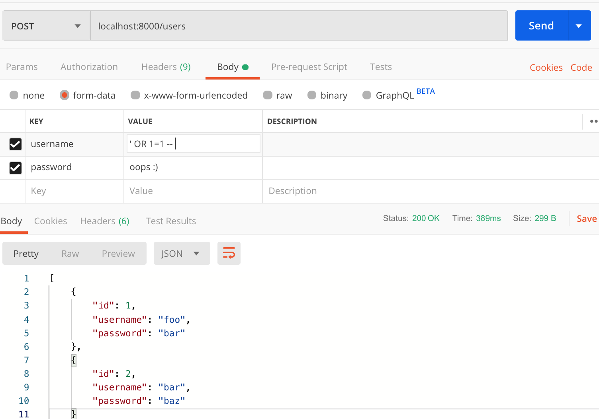
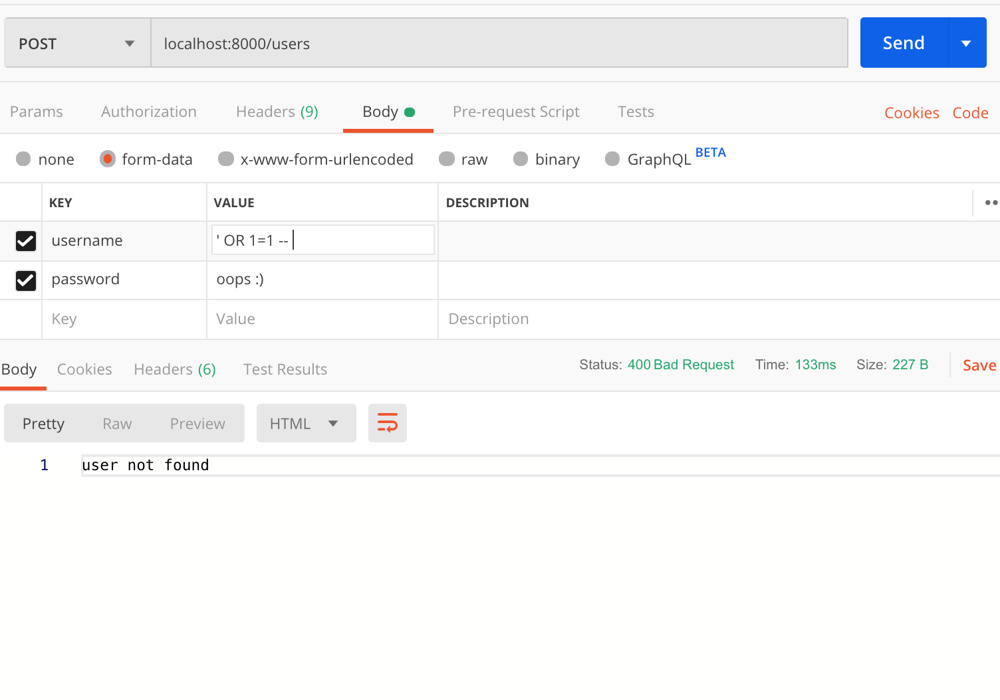

Lecture 23 - More SQL Queries and Joins

Remember to not push your node_modules...
Some Wireframe Highlights!
Other Notes and Agenda
Video on Postman out!
Provided demos of importing a .sql and .csv file in phpMyAdmin also available.
Today:
- Using ? placeholders for variables in SQL queries
- More database manipulation
- Multi-table Databases and Queries
How to Submit/Use Data for SQL Tables
- Create tables in a
setup.sqlfile - Either use INSERT statements to populate the tables in .sql or Node.js, or provide a csv file (similar to
menu-data.csv). - Only you have your tables populated in phpMyAdmin, so it's important others can setup your project on a different computer without manually inserting all of the data.
- Use Node.js to query your table(s) to help implement GET/POST endpoints.
Final Project SQL Requirements
- Must have at least 2 tables in your SQL database - your database and table creation code should be defined in your .sql file.
- Each table must contain at least 4 columns that are used in queries to store or retrieve useful data (id can count as one of these columns)
- There should be at least 15 items in your E-commerce store (although we encourage you to add more to create a more interesting storefront). These items should be inserted into the table in your .sql file using INSERT statements.
You may add more data with .csv files for your TA to import in phpMyAdmin (refer to Tuesday's menu-data.csv demo) as long as you include 15 INSERT statements in your .sql file and make it clear (in your .sql file header comment) what data you have added for your TA to import and populate your table(s) with.
Example Outline
-- SQL Comments
-- Include any comments about extra csv importing directions here.
CREATE DATABASE IF NOT EXISTS <yourdb>;
USE <yourdb>;
CREATE TABLE <table> IF NOT EXISTS(...);
CREATE TABLE <table> IF NOT EXISTS(...);
-- Initial INSERT statementssetup.sql outline
SQL so far
Database querying
- SELECT, DISTINCT, WHERE, LIKE, ORDER BY, LIMIT
Database manipulation (create/insert)
- CREATE TABLE with:
- Datatypes: INT, VARCHAR(N), DATETIME, etc.
- Constraints: PRIMARY KEY, DEFAULT, NOT NULL, etc.
- INSERT INTO TABLE
Accessing SQL from Node.js with promise-mysql:
- db = await
mysql.createConnection(...) - rows = await
db.query(...)
db.query
Recall the following query used in section yesterday to implement the /menu/:category GET endpoint:
let qry = "SELECT name, category, subcategory FROM menu WHERE category = '" +
req.params.category + "'";
// e.g. SELECT name, category, subcategory FROM menu WHERE category = 'drinks';
let rows = db.query(qry);Node.js (example)
However this isn't is not secure!!! It is vulnerable to SQL injection
Little Bobby Tables

Another example of SQL injection

Another Example
Suppose we had a POST endpoint to validate a user logging in:
let user = req.body.username;
let pw = req.body.password;
let qry = "SELECT * FROM users WHERE username='" + user +
"' AND password='" + pw + "'";
// e.g. SELECT * FROM users WHERE username='foo' AND password='bar';
let result = await db.query(qry);
if (result.length === 0) {
res.type("text");
res.status(400).send("user not found");
} else {
res.json(result); // send the user info data (a single row) as JSON
}JS
What if a user predicts we're using SQL with their parameters?
CONDITION_A OR CONDITION_B evaluates to TRUE in SQL if either condition is true. 1=1 always evaluates to TRUE. What if we have many users in the users database? What user data could be leaked in such a response?
let user = req.body.username; // "' OR 1=1"
let pw = req.body.password; // "oops :)"
let qry = "SELECT * FROM users WHERE username='" + user +
"' AND password='" + pw + "'";
// e.g. SELECT * FROM users WHERE username='' OR 1=1 -- AND password='oops :)'
let result = await db.query(qry);
if (result.length === 0) {
res.type("text");
res.status(400).send("user not found");
} else {
res.json(result); // send the user info data (a single row) as JSON
}JS
Result - Returning All User Data
Improved Solution: ? Placeholders
let user = req.body.username;
let pw = req.body.password;
let qry = "SELECT * FROM users WHERE username=? AND password=?";
// the qry will be escaped internally and no rows will be returned
let result = await db.query(qry, [user, pw]);
if (result.length === 0) {
res.type("text");
res.status(400).send("user not found");
}JS
Using ? placeholders in the db.query string, we not only avoid evaluating SQL with user-provided parameters, but we also have much cleaner query strings to work with.
The order of each ? placeholder in the query string must match the index of a passed array to the db.query's optional second argument.
Result - Preventing SQL Injection
DELETE and UPDATE
Once we have rows in our table, how might we change the table later?
What is a case when we might want to delete or update a table?
- Deleting a user account (e.g. on Twitter)
- Updating the stock of an inventory table
- Updating the status of a user (e.g. promotion of an employee)
DELETE
Deletes the specified records based on the results of the WHERE clause
CAUTION: if you omit the WHERE clause all records will be deleted.
DELETE FROM table WHERE condition;
SQL (template)
DELETE FROM queue WHERE qid = 8;
DELETE FROM queue WHERE question LIKE "%Java %";
DELETE FROM queue; # caution!!!SQL (example)
DROP TABLE vs. DELETE FROM TABLE
DROP TABLE will delete the entire table from the database
- Only do this in a
setup.sqlfile withDROP TABLE IF EXISTSto re-initialize a database with new tables)
DROP TABLE IF EXISTS queue; -- no error if table doesn't exist
SELECT * FROM queue; -- errorSQL
DELETE FROM TABLE will delete all rows from the table, but the table will still exist.
DELETE FROM queue; -- assume queue table exists
SELECT * FROM queue; -- no error, 0 records returnedSQL
UPDATE
UPDATE table_name
SET col1 = val1, col2 = val2, ...
WHERE condition;
SQL (template)
UPDATE queue
SET assigned_ta = "twolman"
WHERE id = 4;SQL (example)
UPDATE changes all rows where the condition is true.
If you omit the WHERE constraint, all records will be updated.
UPDATE queue
SET assigned_ta = "twolman"; -- 800 WPM? More like 800 q's-per-minute.
SQL (example)
Using Multible Tables in Databases
Related tables and keys

- Primary Key: a column guaranteed to be unique for each record
- Foreign Key: a column from Table B that references a in PRIMARY KEY or UNIQUE column in Table A
...
FOREIGN KEY (dept_id) REFERENCES employees (dept_id)Using FOREIGN KEYs
The following rules apply to foreign key definitions:
- A table can have 0 or more foreign keys.
- Define the FOREIGN KEY(s) when a table is created or altered.
- If the referenced column is null, the foreign key can be null.
Redesigning the WPL Queue Table
Suppose we wanted to manage TA shifts, and also allow other admin roles in a Queue Interface.
The following is an attempt to add more data to a WPL queue table:
CREATE TABLE old_queue(
id INT PRIMARY KEY AUTO_INCREMENT,
status VARCHAR(10) DEFAULT "waiting",
name VARCHAR(255) NOT NULL, -- name of student
email VARCHAR(255) NOT NULL, -- email of student
student_id INT NOT NULL, -- 1000000
length TINYINT NOT NULL, -- e.g. 2 or 10
question TEXT,
assigned_ta VARCHAR(255), -- username of TA (e.g. em66)
creation_date DATETIME DEFAULT NOW()
);SQL
A Potential Improved Breakdown
This version demonstrates using FOREIGN KEYs in different ways.
CREATE TABLE users(
uwid INT PRIMARY KEY, -- 1500000
name VARCHAR(255), -- Manny Munoz
email VARCHAR(255) -- em66@uw.edu
);
CREATE TABLE staff(
username VARCHAR(255) PRIMARY KEY, -- em66
uwid INT, -- 1500000
password VARCHAR(255) NOT NULL, -- mochi
section VARCHAR(2), -- AD
role VARCHAR(10) DEFAULT "TA", -- TA
-- keys don't need to be identical, but they are here.
FOREIGN KEY (uwid) REFERENCES users(uwid)
);
CREATE TABLE queue(
qid INT PRIMARY KEY AUTO_INCREMENT, -- 2
status VARCHAR(10) DEFAULT "waiting", -- "assigned"
length TINYINT NOT NULL, -- 2
student_id INT, -- 10000002
assigned_ta VARCHAR(255) DEFAULT NULL, -- em66
question TEXT, -- "Weird JS bug."
creation_date DATETIME DEFAULT NOW(),
FOREIGN KEY (student_id) REFERENCES users(uwid),
FOREIGN KEY (assigned_ta) REFERENCES staff(username)
);See code for some inserted rows!
Section Cafe Example
The following are the CREATE TABLE statements for both tables in the cafe database from section.
CREATE TABLE menu(
id INT PRIMARY KEY AUTO_INCREMENT,
name VARCHAR(100) NOT NULL,
category VARCHAR(100),
subcategory VARCHAR(100),
price DECIMAL(6, 2),
cost DECIMAL(6, 2)
);
CREATE TABLE orders(
id INT PRIMARY KEY AUTO_INCREMENT,
mid INT NOT NULL,
phone_number VARCHAR(20),
email VARCHAR(63),
item_name VARCHAR(63) NOT NULL,
qty INT DEFAULT 0,
total_price DECIMAL(6,2) NOT NULL,
order_time DATETIME DEFAULT NOW(),
FOREIGN KEY(??) REFERENCES menu(??)
);What menu table column would be good to reference as a FOREIGN KEY in the orders table?
Can we remove any redundant columns now? Is there another table you can think of factoring out?
How can we use multiple tables in one SQL query?
When you have relationships defined with FOREIGN KEY/PRIMARY KEY, it is often useful
to reference both tables to combine data (e.g. category of a menu item to display order details, requiring both menu and orders tables)
We can reference multiple tables either with an additional WHERE constraint or the JOIN keyword.
Multi-table WHERE Syntax
SELECT col(s)
FROM table1, table2, ...
WHERE table1.a = table2.b
AND table2.c > '42';
SQL (template)
SELECT queue.question, queue.creation_date, users.name
FROM queue, users
WHERE queue.student_id = users.uwid
AND queue.question LIKE "%Halp%";SQL (example)
Giving Names to Tables (Aliases)
SELECT queue.question, queue.creation_date, users.name
FROM queue, users
WHERE queue.student_id = users.uwid
AND queue.question LIKE "%Halp%";SQL (example)
A more compact solution (giving variable names to tables)
SELECT q.question, q.creation_date, users.name
FROM queue q, users
WHERE q.student_id = users.uwid
AND q.question LIKE "%Halp%";SQL (alternative example)
- You can optionally give names to tables (like a variable) following the table name in FROM.
- Note: To specify all columns in a table, you can write table.*, but this tends to be poor practice if you don't use all columns
An Equivalent Way to JOIN Tables
SELECT q.question, q.creation_date, users.name
FROM queue q, users
WHERE q.student_id = users.uwid
AND q.question LIKE "%Halp%";SQL (example from previous slide)
SELECT q.question, q.creation_date, users.name
FROM queue q
JOIN users ON q.student_id = users.uwid
WHERE q.question LIKE "%Halp%";SQL (alternative example, using the JOIN keyword)
The JOIN keyword is another way to join multiple tables. Some people find
this more intuitive, while others find joining tables on multiple WHERE conditions more
intuitive. Use whichever form you prefer most.
Final Tips for Designing Different SQL Queries
- Which table(s) contain the critical data? (
FROM) - Which columns do I need in the result set? (
SELECT) - How are tables connected (
JOINand/orWHERE) and values filtered (WHERE)? - Do I need to return only
DISTINCTrecords? - Do I care about the order of records returned? If so, which columns do I need to sort by and in what precedence?